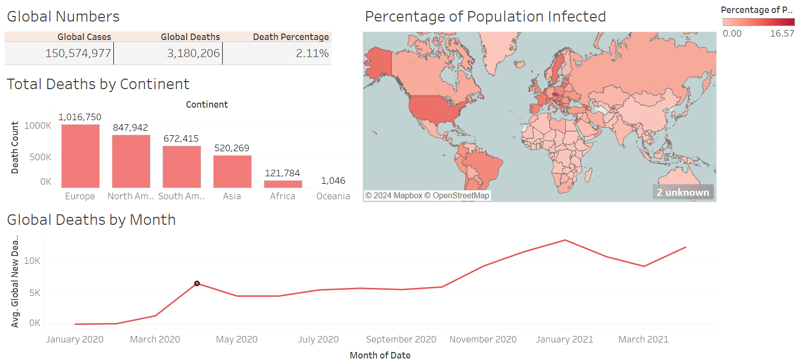
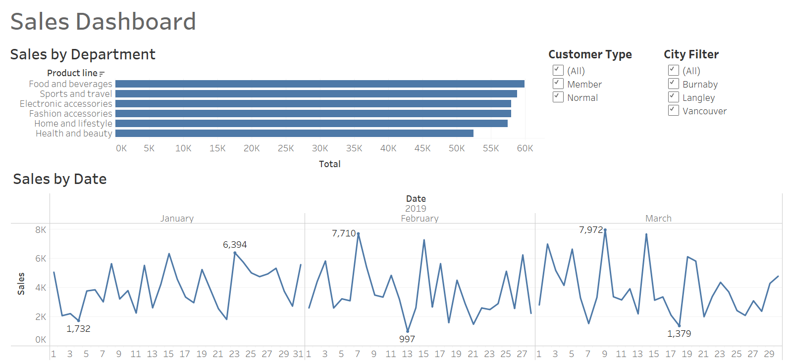
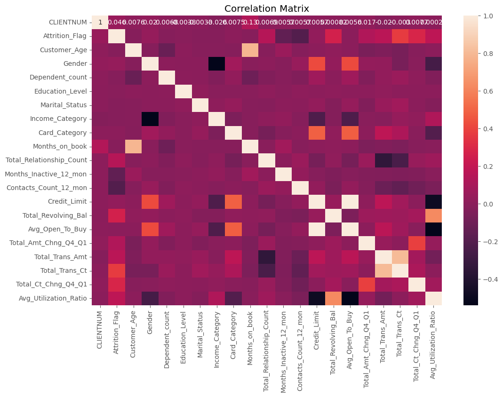

Aspiring professional with sound business and technical skills.
B.B.A., Management Information Systems & Finance
Beedie School of Business, Simon Fraser University, Burnaby, BC
Business Analyst @ Cravings Coffee
Project Manager @ Vitanergy Natural Supplements
This project involved reconfiguring Coursera’s database to accommodate new AI features, namely an autonomous chatbot and auto-practice quizzes. It began with an analysis of Coursera’s website to discern data requirements, followed by creating an entity-relationship diagram (ERD) outlining the necessary tables for housing the data. The ERD guided the creation of the MySQL database, which was then populated with temporary data. Additionally, SQL queries were created to aid data-driven managerial decision-making.
This project’s key insights included the application of normalization techniques, MySQL schema creation, leveraging of ChatGPT for prototyping, generating business value through SQL queries, comprehensive data analysis, ERD visualization and testing with temporary data.
This project aimed to visualize global COVID-19 data, beginning with data collection from reliable sources, followed by processing and cleaning to ensure accuracy. Then, visualizations were crafted to offer insights into the pandemic’s spread and impact worldwide, highlighting trends, regional comparisons and time series progression. The data was sourced from Our World in Data and processed using SQL for querying before being visualized in Tableau.
This project’s key insights included mastering SQL techniques for data cleaning, honing skills in Tableau for visualization, understanding the significance of choosing appropriate visualization types, grappling with real-world data challenges like missing values and gaining a deeper comprehension of COVID-19’s global effects through data analysis and visualization.

This project involved creating an interactive Tableau visualization, focusing on sales performance insights. It began with data acquisition, data preprocessing and dashboard design to facilitate data driven insights. Data acquisition and preprocessing tasks were completed using Excel and visualization related task were completed using Tableau.
This project’s key insights included analysis of sales trends, identification of top-performing products/regions and detection of seasonal patterns. Other learnings include enhanced user experience with interactive elements like filters and drill-down capabilities. Improved communication of complex data insights to non-technical stakeholders also fostered an environment of accessibility and actionability.

This project aimed to predict customer churn for a bank using the Pandas and Seaborn Python libraries to conduct exploratory data analysis (EDA). Pandas was leveraged for data gathering and preparation, handling of missing values, removing of duplicates and for converting data types for dataset cleanliness.
This project’s key insights included developing proficiency in EDA techniques, employing Python and Pandas to summarize data with descriptive statistics, visualizing distributions and relationships using Matplotlib and Seaborn and identifying churn indicators. This project also helped strengthen visualization skills by effectively communicating insights through histograms, scatter plots and heatmaps.
